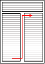
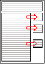

Getting A Job
CV
This CV section is relevant for people applying to jobs within the UK.
Best practice
- Keep it short and concise, 1-2 pages maximum
- Put your details at the top. Only these details are necessary:
- Name
- Email (sensible one - no sexy_lulu@hotmail.com etc)
- Phone number
- Your city (not your full address since this is personal information! If they need it they'll ask for it later)
- If you have a LinkedIn profile you can add a link to it here. (Your LinkedIn profile should have the same info/dates.)
- Use the following sections, and only populate them with relevant details
starting from the most recent first
- Summary (optional)
- Summary is who you are now, a short ‘brag’ and what you want to do next. Examples below:
- Skills
- Employment
- Use action verbs for each bullet point (see: https://www.indeed.com/career-advice/resumes-cover-letters/action-verbs-to-make-your-resume-stand-out)
- Show your accomplishments, with numbers if you can (e.g. Improved landing page time to interactive by 50%)
- See employment explained section, below
- Education (this can go above Employment if the last thing you did was education and not work)
- Personal projects
- Interests (optional)
- Summary (optional)
Resources
Profile section explained
A profile section says who you are now, a quick summary of skills/experience (1-2 sentences) and what you want to do next. It needs to use action verbs and describe the job you’re applying for. Change this section depending on the role you apply to, copying the phrases used in the ad. Stay away from “I am” (1st person) or Nick is” (3rd person) – aim for a 3rd person ‘impersonal’ tone –
I am An experienced front end web developer who takes pride in the accessible sites using a variety of tools. I have Experience of working in a dynamic project environment using agile methodologies and tools including Adobe studio and React. I am Now looking for a new challenging position in a young dynamic organisation to build and consolidate skills.
In the example above removing the “I am / I have” makes it sound a little less boastful and more factual – you can say more about yourself. It’s easy to write them in the first draft, then delete out later.
Change the job title in the first line to match the job you are applying for. If the job you are applying for is a Front End Web Designer – then you say you are a front end web designer – even if your last job was widget sales. (Nothing turns off a recruiter faster if the first line of the CV says you are something they are not looking for!) Mirror the job ad language here – if they call a developer a designer, use their language.
Next – if the ad asks for certain tools, and you have that experience – mention them in the profile. Bring out the most relevant bits of your CV experience in the next couple of sentences.
Finally – the last sentence is what you want to do next. What sort of role in what sort of organisation. Again, mirror the language of the job ad. If they say they are a young dynamic agency – then you would like your next role in a young dynamic organisation.
Mirroring the language and terms helps you apply for a particular role. If you are writing a general CV, write it using industry standard terms and tools.
Career section explained
Everything you have delivered in a role can be explained as an achievement. Each achievement is just an example of completed work – ideally one that went well. It needs to have some quantitative element if possible. Each job needs 2 – 3 achievements. Layout something like:
Jan 2018 – Sept 2019 Front End Web Developer Acme Web Ltd
Acme are an award winning developer based in Glasgow, with a design team of 30, and clients across the UK. Working as part of a wide team, and along-side clients, I develop unique web front ends with UI and mobile accessibility in mind. Working with Jira, PHP and Adobe tools.
Achievements:
- 2018 - Redesigned and dramatically simplified a web site for a client in 2 months, with very positive feedback from the client and their customers.
- 2019 - Working on a client premise, alongside marketing team, Created a custom Wordpress site for a charity, retiring an aging flash site. Handover included posting and maintenance training and documentation allowing them to become self-sufficient.
Achievements stop you writing in broad terms about your responsibilities and give a better flavour of your experience.
Add the most recent experience first. The most recent/ most important information appears ahead of the older or less important. If education is more important than experience, then put the education section ahead of experience. In most cases, experience is going to be of more interest. Focus on the experience that is relevant to the job you want. If have an older unrelated career, defocus its importance to you by writing less about it. Pull out the important aspects that are transferable though. For example if your previous experience was working in a pub only write 1 line about it, with no achievements. – there are transferable skills – customer service, working as part of a team, supporting colleagues.
Jan 2016 – Jan 2018 The Royal Hotel Barman
Flexibly working whist studying - Part of a small team in a busy hotel bar – working nights/weekends (move on, next job - recruiters don’t want any more info)
Don’t try to hide gaps in employment. Explain them if more than a few months. Having said that, if you have unpaid volunteer work – add this as a job. Expand on it if it provided relevant experience.
CV Layout
The layout of the CV should be right for the role you’re applying for – an accountant’s cv should be boring (would you hire a creative accountant?). A creative’s cv can be more visually appealing – but it’s tricky to get right. Like all things, for your CV, content is king – layout and eye-appeal is secondary – and in many cases, if done badly can detract from the content.
2-column CVs are best avoided. But some are worse than others.

In this 2-column example, 2-column format is applied to all of CV text so that the top of both columns is likely to be very different content – this makes it more difficult to read and can trip up screen reading and applicant tracking systems (ATSs) if it tries to read across a line.
Also – CVs are usually compiled with the most important information at the top of page 1, and the least important at the top of page 2. The 2-col format can distort this – leaving your best information at the bottom of the page.

One 2-column format that can work is using a 2nd ‘minor’ column for keywords and skills – to highlight the experience in the main body. It can be a lot of work to set this up and it still can trick an ATS in to trying to parse it as a single line.
If you absolutely have to have a 2-column format – this is going to be the best.
Bottom line - avoid the 2 columns, it doesn’t gain you enough for the problems it causes.
File format
Avoid PDF if you can. PDFs can be tricky to copy and paste from - often adding line breaks to text blocks that line-wrap. (Agencies often reformat your CV to fit their house style in order to present it to clients – making copy & paste more difficult will not help them).
DOC or DOCX / Word format is preferred by most employers and agents. It's easy to manipulate and copy into systems, and still the ‘industry standard’ CV format. Never embed macros into the doc – most email virus systems will filter these by default.
RTF (rich text) – this is still popular, and if you can make it look good in RTF it is light and easy to maintain.
Whatever the format - never more than 15mb file size. Keep graphical elements to a minimum.
CV guides
- https://nationalcareers.service.gov.uk/get-a-job/cv-sections
- http://www.energizerecruitment.co.uk/software-developers-guide-writing-cv-2017/
CV samples
- https://www.livecareer.co.uk/cv-search/r/front-end-web-developer-31839afbd6b640429d637cdda953561c
- https://www.livecareer.co.uk/cv-search/r/front-end-developer-00fdd3a63d27437d899f94a70df420be
- https://www.brookes.ac.uk/students/careers/students-and-graduates/cv-guide/mature-graduate-cv/ — useful reference for people with gaps in their CV
Cover letter
A cover letter is essential for job applications. Ensure you provide one for each of your job applications. You can search the internet to find various cover letter guides and samples.
Interviews
General interview questions
Technical interview questions with answers (intermediate-level)
Questions to ask the company
- https://github.com/Twipped/InterviewThis — some of these questions are great, but some are not so good
Live interview practice
Personal projects
Personal projects are a good way to build up your portfolio of code projects on Github. They are very useful for employers to see how you code and also demonstrate your enthusiasm.
Inspiration for personal projects
Walkthroughs of projects
Contributing to open source
Easier open source issues for people starting with open source contribution
How to contribute to an open source project on GitHub